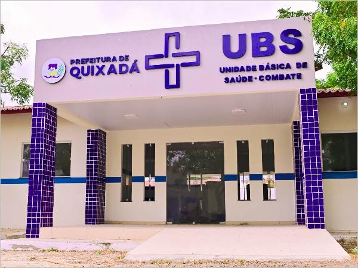
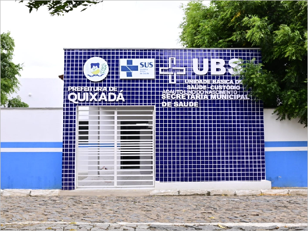

UBS Combate
Endereço: Rua José Eneas Monteiro Lessa
Atendimentos: Consultas médicas (clínico geral, pediatria, ginecologia), enfermagem e odontologia
Serviços: Vacinação, pré-natal, preventivo, controle de doenças crônicas (diabetes/hipertensão) e visitas domiciliares
Horário de Funcionamento: A confirmar
Ver no Mapa
UBS Custódio
Endereço: Distrito de Custódio
Atendimentos: Consultas médicas, odontologia e enfermagem (pré-natal, puericultura)
Serviços: Vacinação, coleta de exames básicos, entrega de medicamentos e acompanhamento de doenças crônicas
Horário de Funcionamento: A confirmar
Ver no Mapa
UPA Quixadá
Endereço: Av. José Caetano, S/N - Planalto Renascer
Atendimento: Urgência e Emergência 24h
Serviços: Consultas de emergência, exames laboratoriais, raio-x e estabilização
Horário de Funcionamento: Aberto 24 horas
Ver no Mapa